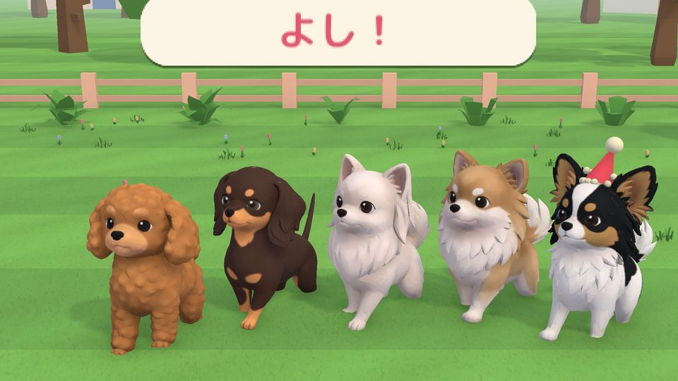
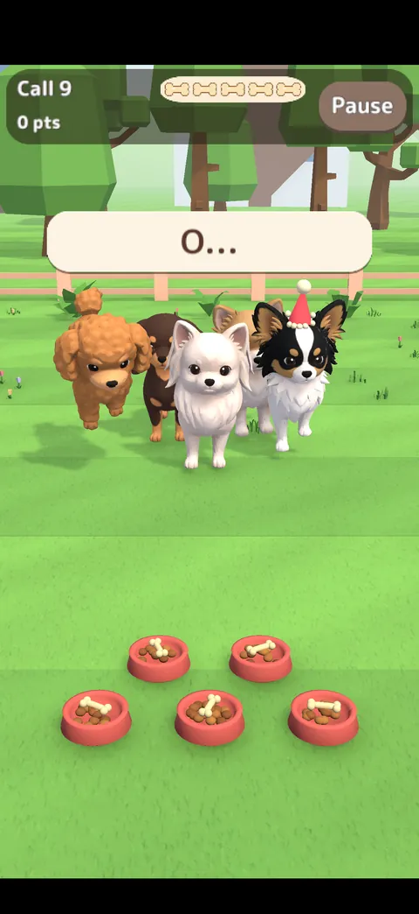
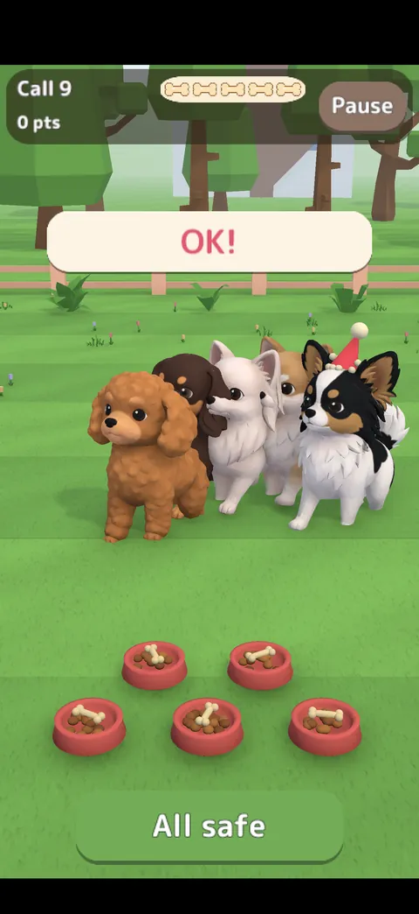
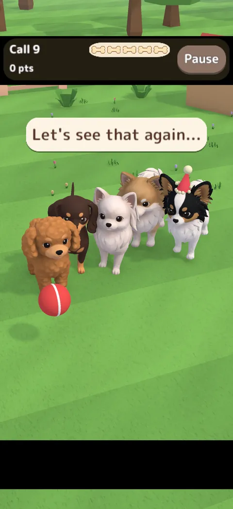
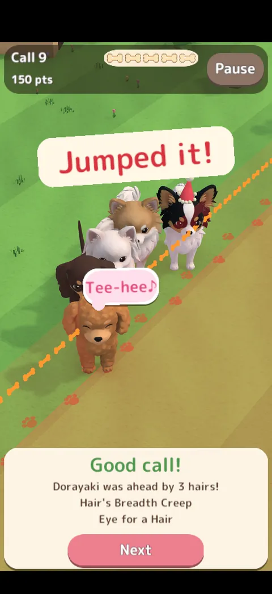
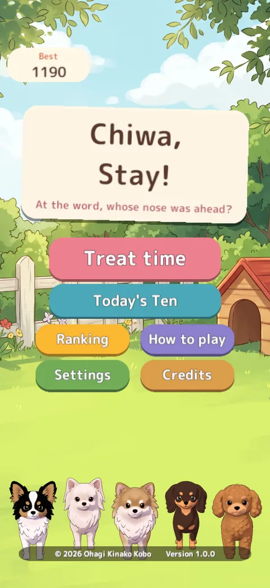

Home › Chiwa, Stay!
Chiwa, Stay!
Spot the dog who went too soon
It's treat time in the garden. The dogs sit in a line and are told to stay, but they just can't keep still, and they creep forward little by little.
When the owner says "OK!", if any dog's nose is ahead of the leader's (the one in the party hat), that dog went too soon. Tap it before the treats are gone.
- PriceFree (with ads)
- DevicesiPhone & iPad (portrait)
- LanguagesEnglish, Japanese
- Age4+

Features
- 1
Spot the nose
Gaps as fine as two hairs. The finer your eye, the higher your score, with a boss question every ten. Only the nose counts — not tongues or ears.
- 2
Slow-motion replay
Time stops and the camera swings round: a line of little bones shows whose nose was ahead.
- 3
Don't be fooled
Watch out for words that only start like "OK!".
- 4
Distractions
Toy planes, balls, butterflies, soap bubbles… plenty to look at instead.
- 5
Today's Ten
Everyone plays the same ten questions each day, with a ranking for the day.
- 6
Nobody gets scolded
A dog that couldn't wait just grins, and the treats are shared.
Screenshots





← scroll sideways →
How to play
- Tap "Treat time" on the title screen (first-timers get a short guide and two practice questions).
- While they wait, just watch. Don't be fooled by words that only start like "OK!".
- When "OK!" comes and they all run to their bowls, tap the dog that went too soon before the treats are gone — or "All safe".
- Play continues until the treat bag is empty. Tapping is all you need.
The dogs
The dog in the party hat is the leader for that question.

Ohagi
Chihuahua × Papillon
Fidgets in tiny steps. The dog in the hat on the icon.

Shiratama
Chihuahua × Maltese
Few steps, steady pace.

Kinako
Chihuahua × Pomeranian
Keeps still, then one last step.

Yokan
Chihuahua × Dachshund
Keeps still, then one last step.

Dorayaki
Chihuahua × Toy Poodle
Tongue pops out easily (tongues don't count).
FAQ
Is it free?
Yes, the whole game is free. An ad may appear now and then as you leave the results, never during play. When the treats run out you may watch an ad to keep going once — your choice.
What can I buy?
Only "Remove Ads", bought once and kept. No random rewards. On a child's device you can restrict purchases with Screen Time.
Is my name shown in the ranking?
Names are picked from a fixed list of words; you can't type one. Only a random number made on your device, the name you picked and your score are sent. There's no chat.
Do I need the internet?
You can play alone, but scores are sent for the ranking. If you're offline, they're sent next time you connect.
Do you use AI?
The dogs' 3D models were made with Meshy and the icon, garden background and props with Google Gemini, then picked and adjusted by the developer. The owner's voice is a speech synthesiser (VOICEVOX). The code was written with Claude Code and reviewed by the developer. No AI content is generated while you play. The music is human-made.
Privacy in short
- The developer collects no personal information, and there are no accounts.
- For the ranking, a random number, the name you picked and your score are sent to a server and deleted after a set period.
- The ad service, Google AdMob, may use an advertising identifier and approximate location. Personalised ads depend on your iPhone's tracking permission.
Play it
More games
-

Chiwa-Chiku RUN
Collect chikuwa, dodge obstacles and dash to the goal in this cosy 3D dog runner.
Free · no ads · no purchasesiPhone & iPad / PC -

Kuttsuki Chiwa Dango
Little dogs hop onto a dozing owner's lap and snuggle up in this cosy drop puzzle.
Paid once · no ads (free in browser)iPhone & iPad / PC browser -

Amiami Chiwa Osanpo
The dogs' leashes got braided on the walk. Swap dogs and handles to straighten them out.
Free (ads; Remove Ads available)iPhone & iPad / PC browser -

Chiwa Hanko Kacho
Chief Ohagi, a chihuahua, stamps documents with a seal on the tip of his tail. Chief Neko checks every one.
Free · no adsPC browser (unityroom)